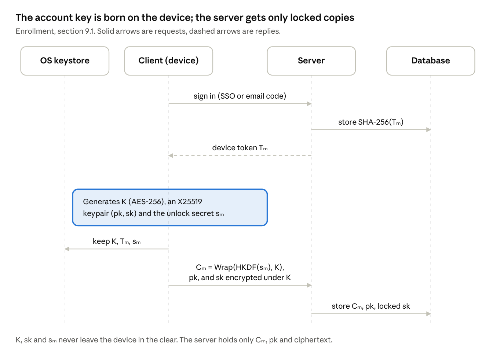
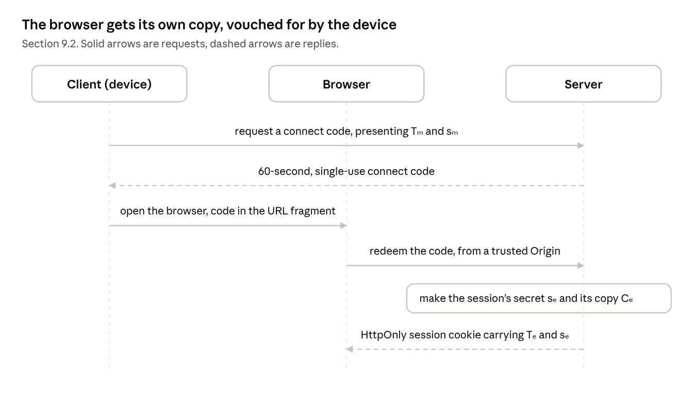
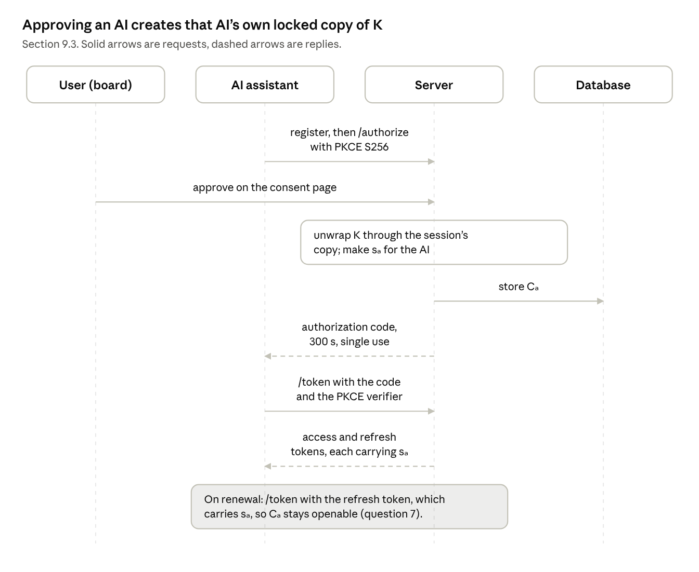
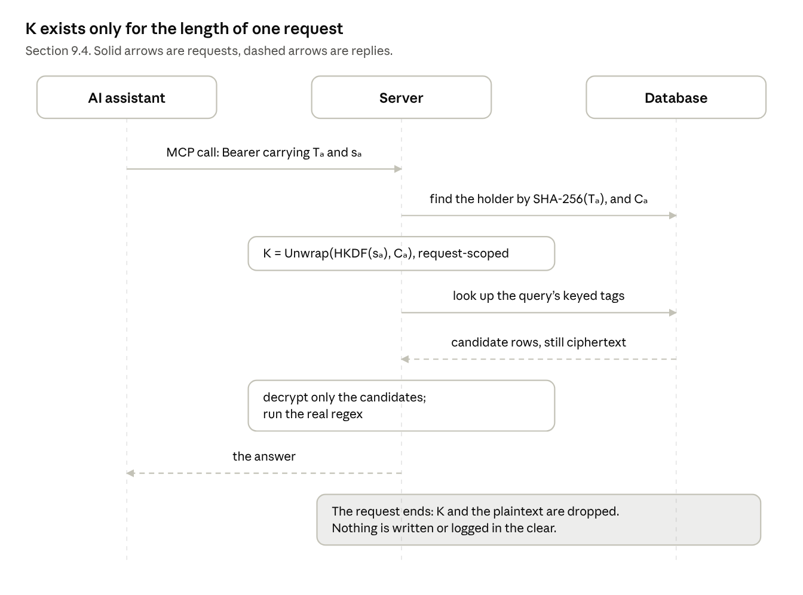
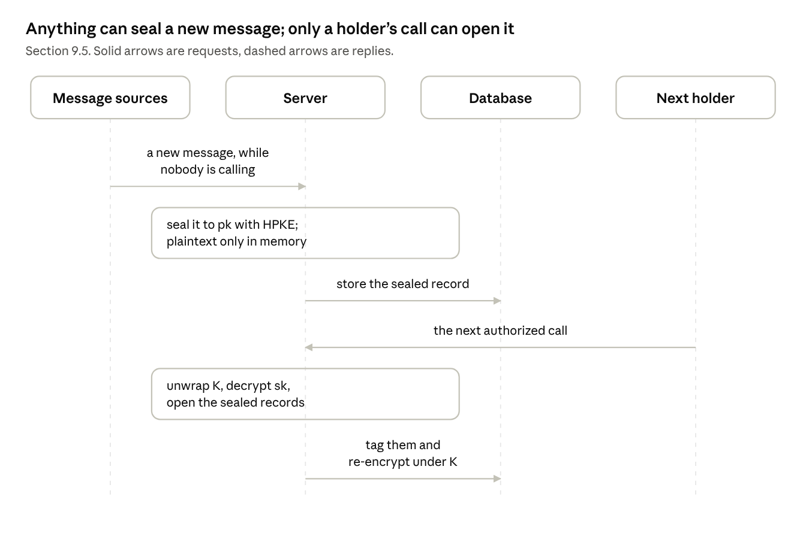
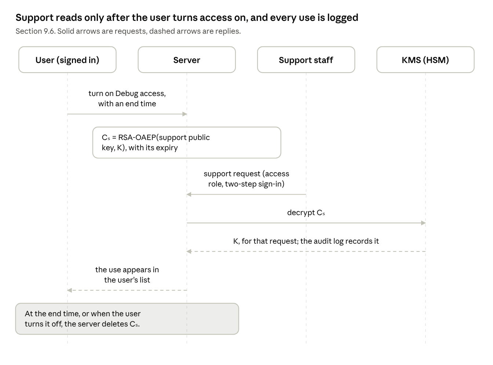
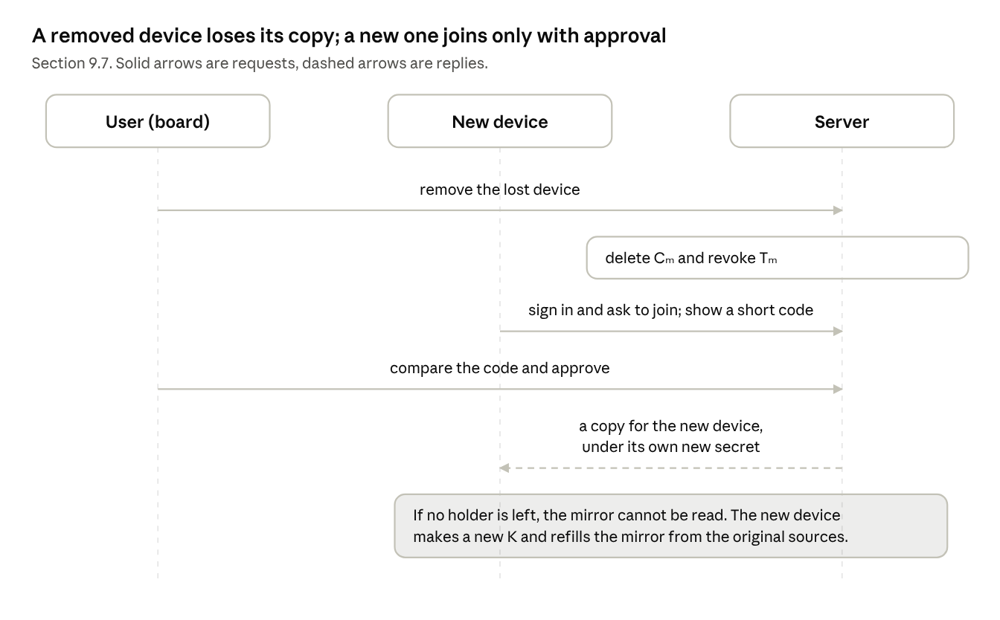
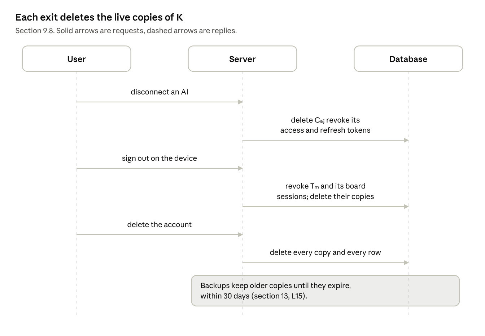

9. Protocol flows
The eight flows below are the whole proposal: in each, K is unwrapped only inside a request that presents a holder’s secret. Notation is from section 6. Steps marked “built” run that way today.
9.1 Enrollment: the client’s first run
- Client → Server: sign in with Google or an emailed code. Built.
- Server → client: device token Tₘ. The server stores SHA-256(Tₘ). Built.
- Client: generates K, an X25519 keypair (pk, sk), and the device’s unlock secret sₘ.
- Client: stores K, Tₘ and sₘ in the OS keystore.
- Client → Server: Cₘ = Wrap(HKDF(sₘ), K), pk, and sk encrypted under K.
- Server: stores them. K, sk and sₘ never leave the device in the clear.

The first three messages run today; everything below the line is proposed. K is created on the device, and only locked copies cross to the server.
9.2 Opening the web board
- Client → Server: request a connect code, presenting Tₘ and sₘ. Built, without sₘ.
- Server → client: a 60-second, single-use connect code. Built.
- Client: opens the browser with the code in the URL fragment. Built.
- Browser → Server: redeem the code, from a trusted Origin. Built.
- Server: makes the session’s secret sₑ and its copy Cₑ.
- Server → Browser: an HttpOnly session cookie carrying Tₑ and sₑ.
Whether Cₑ is made at step 2 or step 5 is open (question 6). Made at step 5, a code that expires unused leaves no copy behind, but the code must then carry a secret that opens K.

The device vouches for the browser with a one-use code; the browser then holds its own secret in an HttpOnly cookie.
9.3 Connecting an AI assistant (OAuth 2.1)
- AI → Server: dynamic client registration, then a redirect to
/authorizewith a PKCE S256 challenge. Built. - User, signed in on the board, approves on the consent page. Built.
- Server: unwraps K through the session’s copy, makes sₐ for the AI, stores Cₐ.
- Server → AI: an authorization code, 300 seconds, single use. Built.
- AI → Server:
/tokenwith the code and the PKCE verifier. Built. - Server → AI: an access token and a refresh token, each carrying sₐ.
- On renewal, AI → Server:
/tokenwith the refresh token, which carries sₐ, so Cₐ stays openable (question 7).
Today the redirect allowlist admits Claude, ChatGPT and loopback clients only.

The copy is made inside the user’s signed-in session, so approving the AI is the only step the user takes.
9.4 An AI asks a question
- AI → Server: an MCP call,
Authorization: Bearercarrying Tₐ and sₐ. Built, without sₐ. - Server: finds the holder by SHA-256(Tₐ), and its copy Cₐ. Built, without Cₐ.
- Server: K = Unwrap(HKDF(sₐ), Cₐ), held in a request-scoped context. A route that needs K and lacks it fails; it never falls back to plaintext.
- Server → Postgres: look up the query’s keyed tags in the GIN index (section 10).
- Postgres → Server: candidate rows, still ciphertext.
- Server: decrypts only the candidates, runs the real regex, and returns the answer.
- The request ends. K and the plaintext are dropped; nothing is written or logged in the clear.

Only the candidate rows are decrypted, and K is dropped when the request ends.
9.5 Arrivals while nobody is calling
- Slack sync, the inbound email webhook or the Telegram bot → Server: a new message. Built.
- Server: seals it to pk with HPKE and stores the sealed record. The plaintext exists in memory only while it is sealed.
- On the next holder’s call, the server unwraps K, decrypts sk, opens the sealed records, tags them and re-encrypts them under K.
The arrivals queue, which runs on Google Pub/Sub in development, carries message ids only, never content.

New mail keeps arriving without the server ever holding K; it waits sealed until a holder calls.
9.6 Debug access
- User, signed in (the session holds K) → Server: turn on Debug access, with an end time and an optional reason.
- Server: Cₛ = RSA-OAEP(support public key, K), stored with its expiry.
- Support staff, with the IAM role and two-step sign-in → Server: a support request.
- Server → Cloud KMS: decrypt Cₛ. KMS → Server: K, for that request. Cloud Audit Logs records the call.
- Server → User: the use appears in the user’s list, read from the audit log.
- At the end time, or when the user turns it off, the server deletes Cₛ.
Cloud KMS does not know the end time; the server enforces it by deleting the copy (question 8).

Support has no copy until the user turns access on, and the KMS audit log records each use.
9.7 A lost device, and a new one
- User, on the board → Server: remove the lost device. The server deletes Cₘ and revokes Tₘ.
- New device → Server: sign in and ask to join. The new device shows a short code.
- User, on an existing holder: compares the code and approves.
- Server: makes a copy for the new device under its own new secret.
- If no holder is left, the mirror cannot be read. The new device makes a new K and refills the mirror from the original sources.
How a second device joins, and whether it also keeps K locally, is not specified yet (question 4).

Revoking a device is deleting one copy; a new device needs approval from a holder the user still has.
9.8 Disconnect, sign out, delete
- Disconnect an AI: delete Cₐ, and revoke its access and refresh tokens.
- Sign out on the device: revoke Tₘ and the board sessions it opened, and delete their copies.
- Delete the account: delete every copy and every row. The Vault deletes K from the Keychain. Backups still hold locked copies until they expire, within 30 days, so a holder secret that survives the deletion could open them until then.

Every exit works by deleting the live copies of K. Backups keep older copies until they expire, within 30 days.